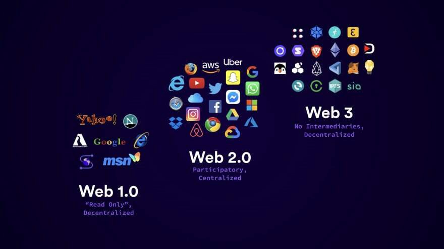

PERBEDAAN ANTARA WEB 1.0, WEB 2.0, DAN WEB 3.0
 Web 1.0 secara umum dikembangkan untuk pengaksesan informasi dan memiliki sifat yang sedikit
interaktif. Sifat dari web 1.0 adalah read.Ciri-ciri umum yang mencolok yaitu consult, surf dan
search.
Jadi web 1.0 hanya digunakan untuk browsing atau mencari informasi tertentu.
Beberapa ciri khas dari
web
1.0 antara lain :
- Halaman Statis
- Penggunaan framesets
Web 2.0 Istilah Web 2.0 pertama kalinya diperkenalkan oleh O’Reilly Media pada tahun 2004 sebagai teknologi Web generasi kedua yang mengedepankan kolaborasi dan sharing informasi secara online. Menurut Tim O’Reilly, Web 2.0 dapat didefinisikan sebagai berikut: “Web 2.0 adalah revolusi bisnis di industri komputer yang disebabkan oleh penggunaan internet sebagai platform, dan merupakan suatu percobaan untuk memahami berbagai aturan untuk mencapai keberhasilan pada platform baru tersebut. Salah satu aturan terutama adalah: Membangun aplikasi yang mengeksploitasi efek jaringan untuk mendapatkan lebih banyak lagi pengguna aplikasi tersebut”
Web 3.0 adalah sekumpulan teknologi yang menawarkan cara baru yang efisien dalam membantu komputer mengorganisasi dan menarik kesimpulan dari data online. Berdasarkan definisi yang dikemukakan tersebut, maka pada dasarnya Semantic Web memiliki tujuan yang sama karena Semantic Web memiliki isi Web yang tidak dapat hanya diekpresikan di dalam bahasa alami yang dimengerti manusia, tetapi juga di dalam bentuk yang dapat dimengerti, diinterpretasi dan digunakan oleh perangkat lunak (software agents).
| Web 1.0 | Web 2.0 | Web 3.0 |
|---|---|---|
| dirancang untuk mengakses infromasi yang interaksinya hanya satu arah | dirancang untuk mengakses informasi dengan interaksi dua arah | Aplikasi – aplikasi online dalam website dapat saling berinteraksi |
| Bersifat interaktif | Internet sebagai platform | adanya web service |
| Pelaku utama Perusahaan yang memiliki web saja | Pelaku utama Perusahaan, dan Pengguna/Komunitas | membutuhkan kecepatan akses Internet yang memadahi dan spesifikasi komputer yang agak tinggi |
| Sumber konten Penerbit/pemilik situs Pengguna | Kemampuan dalam melakukan aktivitas drag and drop, auto complete, chat, voice dapat dilakukan layaknya aplikasi desktop | Dapat mengakses internet melalui gadget lain selain komputer |
Bagikan, Terimakasih
| |